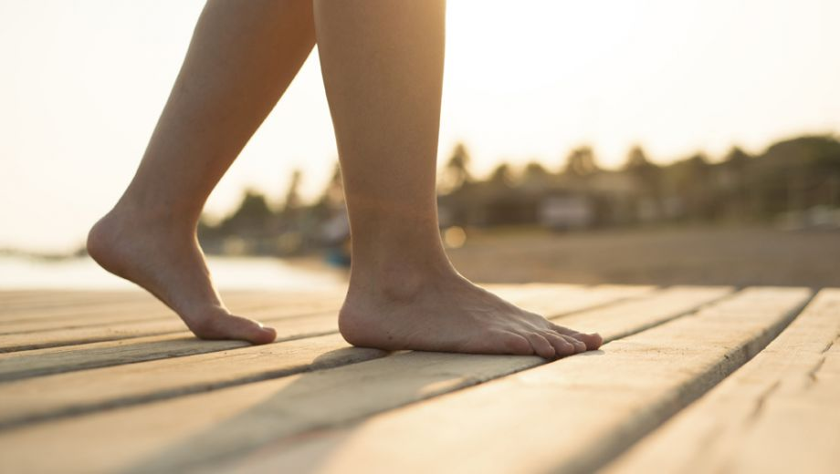
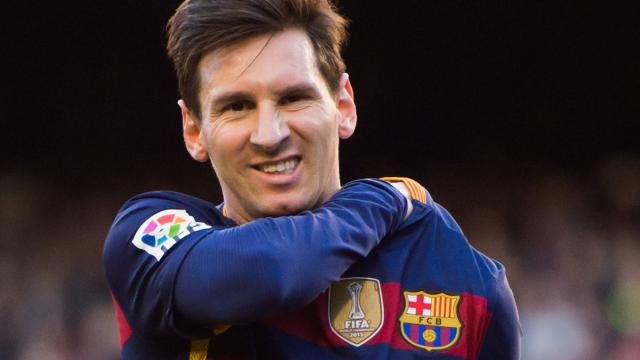

Een wordpress site
Nieuwe berichten
- Man vermoord in de steeg
- laptop over 500 euro
- Waarom mensen op voeten lopen
- wekkers zonder geluid?
Blootsvoets lopen: gezonde gewoonte?
Op je blote voeten lopen. De meningen zijn er nogal over verdeeld. De een vindt het verschrikkelijk, terwijl een ander zelfs graag sport op blote voeten. Los van het feit of je het fijn vindt of niet: is onze omgeving nog gemaakt om op blote voeten te lopen? En kunnen je voeten dat aan?
Onze voorouders deden niets anders dan op blote voeten lopen en dat is helemaal niet zo gek. Natuurlijk wisten ze wellicht niet beter en hadden ze ook amper schoeisel om de voeten te beschermen, maar lopen op blote voeten kan heel gezond zijn. Het versterkt de voetspieren en botmassa.
Messi aan de bal?
Terwijl FC Barcelona zich voorbereidt op de return tegen Valencia in de halve finales van het Spaanse bekertoernooi, ondergaat Lionel Messi dinsdag allerlei medische onderzoeken.
De 28-jarige Argentijn hoopt in het ziekenhuis te horen hoe het staat met de nierproblemen waarmee hij medio december ineens te maken kreeg. Messi miste daardoor de halve finale op het WK voor clubs in Japan De vijfvoudig wereldvoetballer van het jaar, die in 2016 al elf keer trefzeker was, maakte zondag in de gewonnen competitiewedstrijd van FC Barcelona tegen Levante (2-0) de negentig minuten vol.